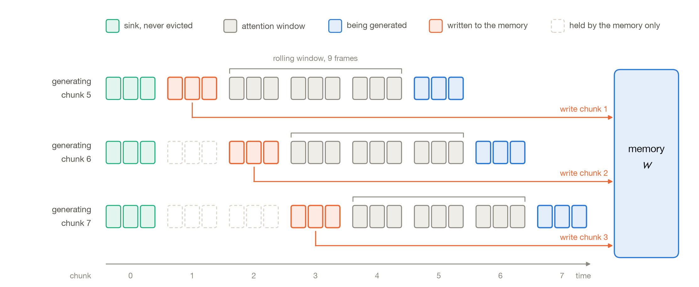
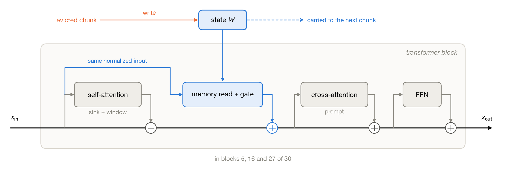
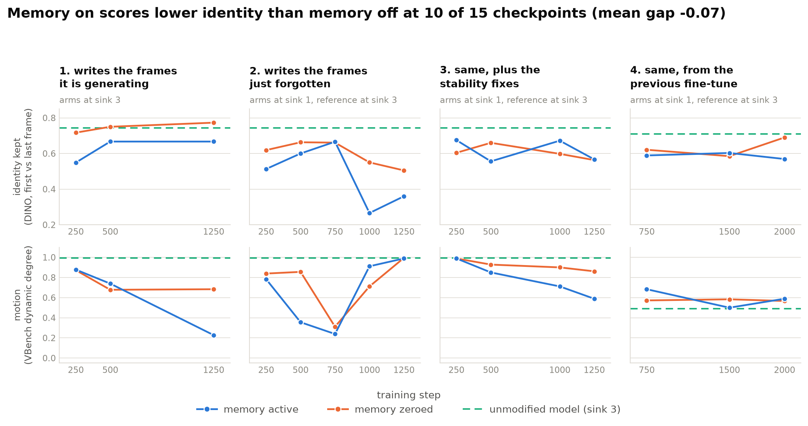

Fast-weight memory for long video generation
Aden Elmi
Research project, June to September 2026

Abstract
Streaming video diffusion models generate a video a few frames at a time and attend only to a short window of recent frames. When the frames that introduced a subject leave that window, the subject's appearance starts to drift. I added a fast-weight memory to such a model (Wan2.1-T2V-1.3B with Anchor-Forcing): an MLP added to a few transformer blocks, whose weights are updated during generation, with each chunk that leaves the attention window. I trained it in four runs and evaluated every checkpoint twice, with the memory active and with it zeroed. Identity was lower with the memory active at 10 of the 15 checkpoints. The checkpoints that froze got high subject-consistency scores from VBench, which suggests that the objective and the metrics reward frames that resemble the previous ones, and a memory can provide that without recalling the subject.
Method
The model generates 3 latent frames at a time and attends to 12: the first 3 frames of the video, kept for the whole generation (the sink), and the 9 most recent. Older frames are dropped. A prompt like "a woman in a red coat" fits many women. Once the frames that showed this one are gone, her face and clothes start to change.
In runs 2 to 4 the memory is written with the chunk that has just left the window. Run 1 writes the chunk being generated instead, which attention can already see. The memory can be added to any set of blocks; in these runs it is in three of the 30, blocks 5, 16 and 27. It reads the same normalized input as self-attention, and its output, scaled by a gate, is added to the residual stream.

The state \(W\) is a SwiGLU MLP \(f_W\) (1536 → 6144 → 1536), about the size of the block's feed-forward layer. The chunk being generated reads it with its queries \(q\). For the write, the keys and values \(k, v\) of the evicted chunk give the gradient of \(\sum_i \eta_i \langle f_W(k_i), v_i\rangle\), with a learning rate \(\eta_i\) predicted for each token. Muon orthogonalizes this gradient before it is added to \(W\), and each column of each weight matrix is then rescaled to its previous norm. The layer follows LaCT, stepped causally chunk by chunk.
The rescaling stops the state from growing over the roughly 80 writes of a one-minute video. In runs 3 and 4 the state also decays at each write, and columns are capped at their initial norm instead of being reset to it. The gate is bounded and computed from the read, which lets the branch stay close to zero when the memory has nothing relevant to add.
Results
All four runs fine-tune the model with DMD distillation, training LoRA adapters and the memory together on 4 GPUs. Run 1 writes the chunk being generated. Run 2 writes the evicted chunk, and in 30% of its training rollouts the sink is removed, leaving the memory as the only carrier of the start of the video. Run 3 adds limits on the memory: its injection is capped at half the residual stream's RMS, its learning rate is halved, its gradients are clipped, and its state can decay. Run 4 is run 3 started from LongLive's released LoRA instead of Anchor-Forcing's, and its dashed reference line is that model.
Each checkpoint is evaluated on the same six prompts and the same noise, once with the memory active and once with it zeroed. Identity is the DINOv2 cosine similarity between the first and the last frame of a video of about one minute. Motion is VBench's dynamic degree, the fraction of clips it rates as dynamic.

With the memory active, identity is lower at 10 of the 15 checkpoints, and the mean difference over all 15 is −0.07. With one seed, a sign test on 10 of 15 gives p ≈ 0.3: the memory is not shown to hurt, but there is no sign that it helps. In runs 1 to 3, the memory-zeroed checkpoints also fall below the reference's motion at most steps, and turning the memory off at inference does not bring the motion back.
Two memory-active checkpoints, run 1 at step 1250 and run 2 at step 750, have almost no motion left: VBench rates only 23% and 24% of their clips as dynamic. It still gives them a subject consistency of 0.97 and 0.98, higher than the 0.95 of the unmodified model.
Discussion
My reading is that the training signal and the metrics reward the same thing: frames that look like the ones before them. Chunk-by-chunk distillation does not penalize a video that stops moving, and subject consistency goes up when it does. A memory trained this way can satisfy both by freezing the video, or by adding the same offset to every frame, without storing anything about the subject. I tested one write rule, one objective and one model, and cannot say how far this generalizes.
In a second set of experiments I tested recall directly. The prompt switches from subject A to subject B and back to A, and at the return the model is given one latent frame of A: either the real frame, or one produced from the memory state by a decoder trained offline. Measured by how much the returning subject resembles its first appearance, a frame from a different video helped as much as the right one. The gain did not depend on what the frame showed.
Limitations
Each point uses one seed and six prompts, and no measurement was repeated, so there is no estimate of the noise. Runs 2 to 4 were evaluated with a single sink frame and the reference with three. On the one checkpoint measured both ways, that difference alone costs 0.06 to 0.09 of identity, as much as the effects above. Outside run 1, only the comparison between the memory active and the memory zeroed is fair.